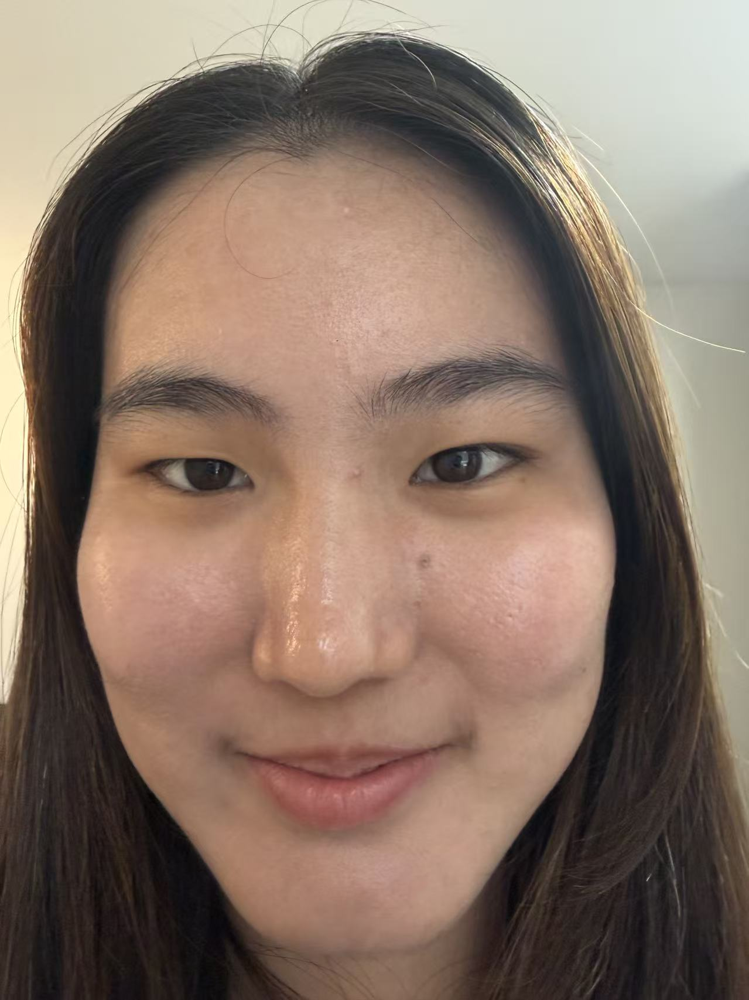
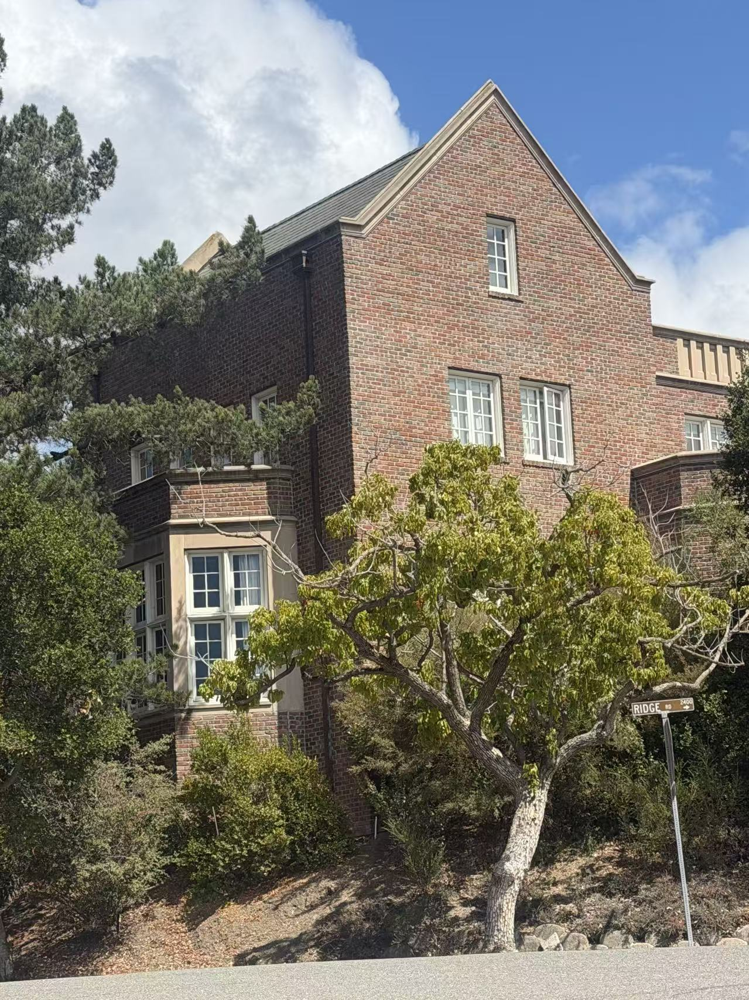
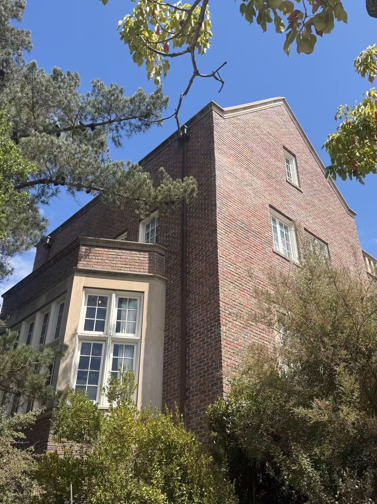
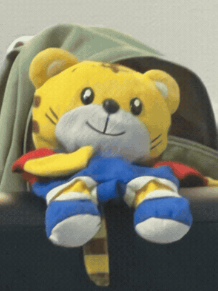

The Selfie: The Wrong Way vs. The Right Way
Same face, same framing, but one shot was taken inches away with a wide lens, and the other from several feet back, zoomed in to match the framing. The difference is entirely about how close the camera's center of projection sits to the subject.

Architectural Perspective Compression
The same idea, run in reverse on a building facade: one photo taken with a long zoom from far away, the other taken up close with no zoom, matched so the facade is roughly the same size in both frames.


The Dolly Zoom
The "Vertigo shot": the camera physically moves back while the lens zooms in, timed so the subject stays the same size throughout, while the background warps dramatically around it.
